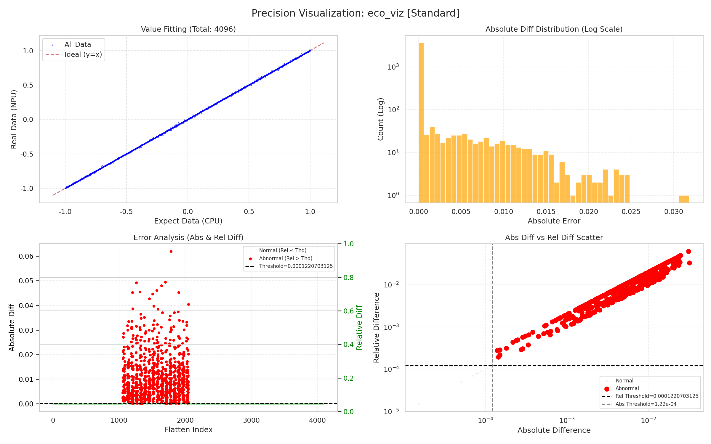
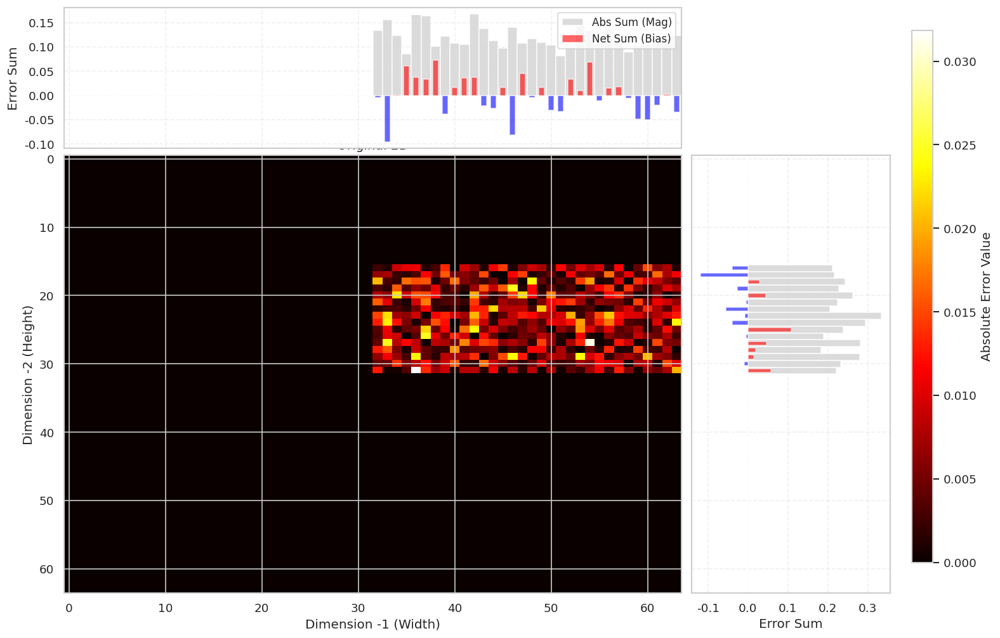

| 算子名称 | 数据类型 | 输出形状 |
|---|---|---|
| 自定义算子 | FLOAT32 | (64, 64) |
| 项目 | 详细信息 |
|---|---|
| 硬件平台 | Ascend |
| 软件版本 | 未知 |
| 标杆平台 | CPU |
| 测试工具 | CT工具生态算子精度验证 |
| 数据类型 | 生成方式 | 分布类型 | 数据规模 | 范围 |
|---|---|---|---|---|
| FLOAT32 | 随机生成 | 均匀分布 | 4096 | [0, 1] |
平均相对误差（MERE）：
最大相对误差（MARE）：
| 指标 | 计算值 | 阈值 |
|---|---|---|
| MERE | 6.642197e-03 | 1.220703e-04 (FLOAT32阈值) |
| MARE | 3.458786e+00 | 1.220703e-03 (FLOAT32阈值×10) |
状态：FAIL
结论：精度验证失败
| 统计指标 | 值 |
|---|---|
| 样本总数 | 4096 |
| 平均误差 | 6.642197e-03 |
| 中位数误差 | 未知 |
| 最小误差 | 未知 |
| 最大误差 | 3.458786e+00 |
| 标准差 | 未知 |
使用标准方法生成的误差分布分析图，阈值使用报告中指定的FLOAT32阈值 (1.220703e-04)。

分析说明：标准误差分布图展示了误差的整体分布情况，帮助了解误差的整体分布特征。
使用 ct viz test golden --spatial 方法生成的空间分布分析数据，阈值使用报告中指定的FLOAT32阈值 (1.220703e-04)。

分析说明：热力图展示了不同位置的误差分布情况，颜色越深表示误差越大。通过此图可以直观地观察到误差较大的区域，帮助定位可能存在的问题。